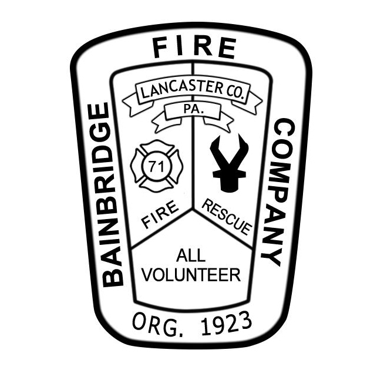

Help Me Geauga
The sections below are the several hard-working fire departments throughout Geauga County.
Auburn Fire Department
The Auburn Fire Department was formed in 1953, with the start up cost of about $2,000. The Auburn FD serves the community and run by the help of the community and volunteers.
Visit their websiteBainbridge Twp Fire
The Bainbridge Township Fire Department proudly protects 11,395 people living in a consistently developing area of 25 square miles for over 70 years of service. We proudly serve you.
Visit their website|  |
Burton Village Fire
The Burton Volunteer Fire Department is independent from the Village of Burton. Please call the Fire Department directly for any information you may need.
Visit their website |
Chardon Fire Dept
Chardon Fire Department is located 30 miles east of Cleveland, Ohio, in heart of the "snow belt" in northern Geauga County.
Visit their website |
Chester Twp Fire Dept
Chester Township Fire Rescue was originally founded in 1943 as the Chesterland Volunteer Fire Department, Inc.
Visit their website |
Hambden Fire Dept
Hambden Fire Department is a combination paid / volunteer fire department which serves the residents of Hambden Township in Northeast Ohio.
Visit their websiteHunting Valley Fire Dept
The Village of Hunting Village does not have its own fire department and/or EMS service. Hunting Valley contracts with the Village of Chagrin Falls Fire Department for these services.
Visit their websiteMiddlefield Fire Dept
The Middlefield Fire Department is rated as an ISO (Insurance Services Office) Class 3 in the Village. Our average response time to incidents in the Village is approximately 2 minutes and 28 seconds.
Visit their website |
Montville Fire Dept
Through continuous training and public education, the members of this department will be ever ready to protect the citizens in our community from the tragedy of fire and provide them with quality Emergency Medical Services.
Visit their website |
Munson Fire Dept
The Munson Fire Department is dedicated to the safety and protection of our community’s quality of life from all hazards through a well-trained, professional, rapid response team, and seeking opportunities to serve.
Visit their website |
Newbury Fire Dept
The Newbury Volunteer Fire Department is an all volunteer fire department protecting 25 square miles with approximately 6,000 residents.
Visit their websiteParkman Fire Dept
In 2014 our fire department was 100% volunteer with 25 people on the roster that responded to calls when they were available.
Visit their website |
Russell Fire Dept
For decades, the men and women of the Russell Fire-Rescue Department have turned out to help their neighbors in times of trouble.
Visit their website |
South Russell Fire Dept
South Russell Village contracts annually with Chagrin Falls Suburban Fire Department for fire and EMS service. We serve to protect our community.
Visit their websiteThompson Fire Dept
Thompson Fire Department proudly protects 2,200 people living in an area of 25 square miles.
Visit their website |
Troy Fire Dept
The department covers approximately 25 square miles and currently staffs 2 personnel from 7AM – 4PM seven days a week.
Visit their website |